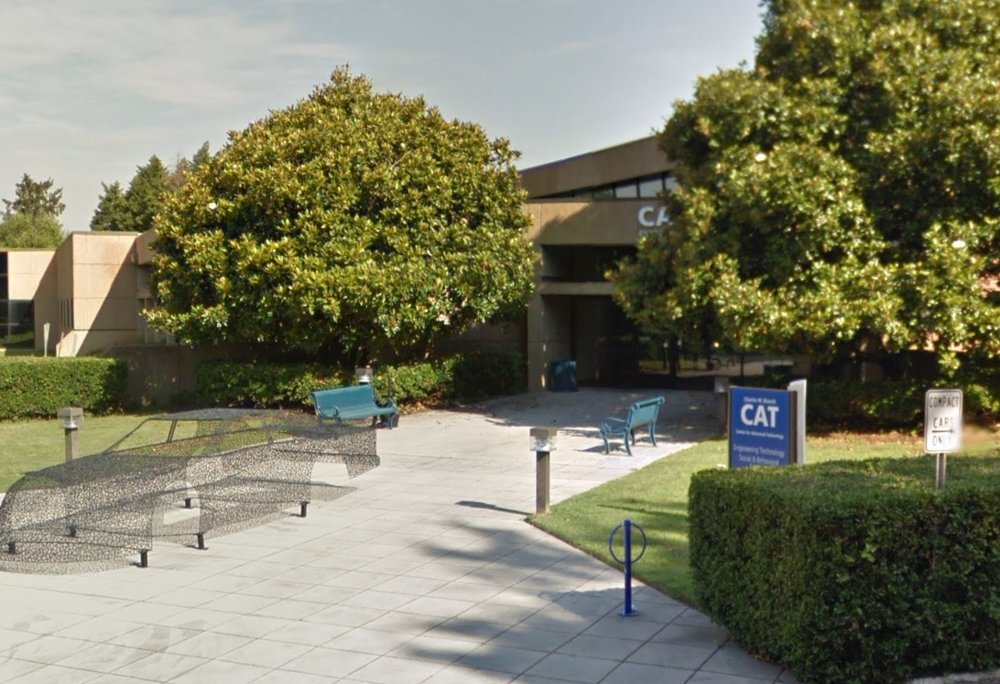

Intro
Chatt State's not a very big campus, but there's still many things to notice about it. Some areas are listed in the list below, with more explanation on the other page. The pond near the front of the campus is where most of the geese around campus center around. There also used to be a bridge there across the water, but I don't know why it was taken away. I also sometimes wonder why the geese are on campus in the first place. I thought maybe they were placed there one day, I can't imagine they would just wander here and stay.

The Branch Center
Most of the activity on campus takes place in bigger buildings like OMNI or Tcat. There are some smaller buildings I've seen, but I'll talk about one of them here. The Branch Center is pretty close to OMNI, but is a lot less smaller. You could walk the whole building within two minutes I'd say. I think it's a nice place to study though. There's even a small lounge area near the back that's used quite a lot.
Interesting Chatt State Areas:
- The pond
- The riverwalk
- Branch center
- The lake/Tennessee Riverpark